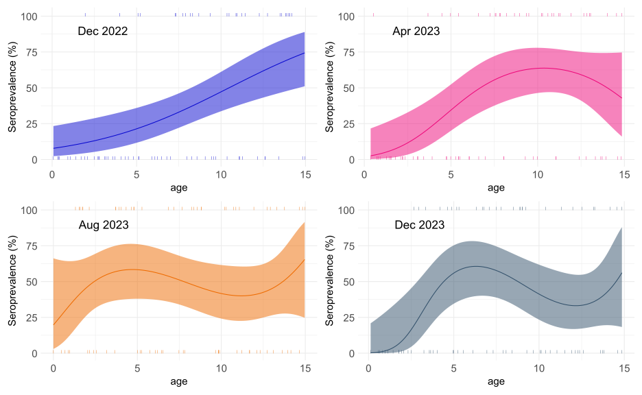

library(readxl)
library(dplyr)
library(stringr)
library(purrr)
library(tidyr)
library(lubridate)
library(magrittr)
library(mgcv)
library(tidyverse)
library(patchwork)HFMD Seroprevalence
Import data
apr_2023 <- read_excel("D:/OUCRU/hfmd/data/4_2023.xlsx")
aug_2023 <- read_excel("D:/OUCRU/hfmd/data/08_2023.xlsx")
dec_2022 <- read_excel("D:/OUCRU/hfmd/data/12_2022.xls")
dec_2023 <- read_excel("D:/OUCRU/hfmd/data/12_2023.xlsx")
t423 <- data.frame(apr_2023[-c(1,2),10:14])
t423$pos <- replace(t423$...14,is.na(t423$...14),0) %>%
str_detect(regex(paste(2^(4:10), collapse = "|"))) %>%
as.integer(as.logical())
colnames(t423) <- c("age","col_day","col_month","col_year","neutralization","pos")
t423$age <- as.numeric(t423$age)
t823 <- data.frame(aug_2023[-c(1,2),c(9,14:17)])
t823$pos <- str_detect(t823$...17,regex(paste(2^(4:10), collapse = "|"))) %>%
as.integer(as.logical())
colnames(t823) <- c("age","col_day","col_month","col_year","neutralization","pos")
t823$age <- as.numeric(t823$age)
t1222 <- data.frame(dec_2022[-c(1,2),10:14])
t1222$pos <- replace(t1222$...14,is.na(t1222$...14),0) %>%
str_detect(regex(paste(2^(4:10), collapse = "|"))) %>%
as.integer(as.logical())
colnames(t1222) <- c("age","col_day","col_month","col_year","neutralization","pos")
t1222$age <- as.numeric(t1222$age)
t1223 <- data.frame(dec_2023[-c(1,2),c(9,14:17)])
t1223$pos <- replace(t1223$...17,is.na(t1223$...17),0) %>%
str_detect(regex(paste(2^(4:10), collapse = "|"))) %>%
as.integer(as.logical())
colnames(t1223) <- c("age","col_day","col_month","col_year","neutralization","pos")
t1223$age <- as.numeric(t1223$age)Function
predict2 <- function(x, ci = .95, le = 512, m = 100) {
p <- (1 - ci) / 2
link_inv <- x$family$linkinv
dataset <- x$data
n <- nrow(dataset) - length(x$coefficients)
age_range <- range(dataset$age)
ages <- seq(age_range[1], age_range[2], le = le)
x |>
predict(data.frame(age = ages), se.fit = TRUE) |>
extract(c("fit", "se.fit")) %>%
c(age = list(ages), .) |>
as_tibble() |>
mutate(lwr = m * link_inv(fit + qt( p, n) * se.fit),
upr = m * link_inv(fit + qt(1 - p, n) * se.fit),
fit = m * link_inv(fit)) |>
select(- se.fit)
}Seroprevalence by age
Fit by GLM
m <- 100
eps <- 1
plot1222 <- glm(pos ~ age, binomial, data = t1222) |>
predict2() %>% as.data.frame() %>%
ggplot(aes(x = age,y = fit))+
geom_line(aes(col = "Dec 2022"))+
geom_ribbon(aes(x = age,y = fit,
ymin=lwr, ymax=upr),alpha = 0.5)+
ylim(0,101)+
theme_minimal()+
scale_color_manual(name = "Y series",
values = c("Dec 2022" = "#0808cf"))+
labs(y = "Seroprevalence(%)")+
geom_point(data= t1222, aes(x = age,y = m * pos + eps),shape = "|",size = 3,
col = "#0808cf")+
theme(
axis.text.x = element_text(size = 15),
axis.text.y = element_text(size = 15),
legend.title= element_blank(),
legend.position = "inside",
legend.position.inside = c(0.15,0.80),
legend.text = element_text(size = 15))plot1222 <- glm(pos ~ age, binomial, data = t1222) |>
predict2() %>% as.data.frame() %>%
ggplot(aes(x = age,y = fit))+
geom_line(aes(col = "Dec 2022"))+
geom_ribbon(aes(x = age,y = fit,
ymin=lwr, ymax=upr),alpha = 0.5,fill = "#0808cf")+
ylim(0,101)+
theme_minimal()+
scale_color_manual(name = "Y series",
values = c("Dec 2022" = "#0808cf"))+
labs(y = "Seroprevalence (%)")+
geom_point(data= t1222, aes(x = age,y = m * pos + eps),shape = "|",
col = "#0808cf")+
theme(
axis.text.x = element_text(size = 15),
axis.text.y = element_text(size = 15),
legend.position = "hide",
legend.text = element_text(size = 15),
axis.title.x = element_text(size = 15),
axis.title.y = element_text(size = 15))+
annotate("text", x = 3, y = 90, label = c("Dec 2022"),size = 6)
plot0423 <- glm(pos ~ age + I(age ^2), binomial, data = t423) |>
predict2() %>% as.data.frame() %>%
ggplot(aes(x = age,y = fit))+
geom_line(aes(col = "Apr 2023"))+
geom_ribbon(aes(x = age,y = fit,
ymin=lwr, ymax=upr),alpha = 0.5,fill = "#ed097b")+
ylim(0,101)+
theme_minimal()+
scale_color_manual(name = "Y series",
values = c("Apr 2023" = "#ed097b"))+
labs(y = "Seroprevalence (%)")+
geom_point(data= t423, aes(x = age, m * pos + eps),
shape = "|",
col = "#ed097b")+
theme(
axis.text.x = element_text(size = 15),
axis.text.y = element_text(size = 15),
legend.position = "hide",
legend.text = element_text(size = 15),
axis.title.x = element_text(size = 15),
axis.title.y = element_text(size = 15))+
annotate("text", x = 3, y = 90, label = c("Apr 2023"),size = 6)
plot0823 <- glm(pos ~ age + I(age^2) + I(age^3), binomial, data = t823) |>
predict2() %>% as.data.frame() %>%
ggplot(aes(x = age,y = fit))+
geom_line(aes(col = "Aug 2023"))+
geom_ribbon(aes(x = age,y = fit,
ymin=lwr, ymax=upr),alpha = 0.5,fill = "#ed6b00")+
ylim(0,101)+
theme_minimal()+
scale_color_manual(name = "Y series",
values = c("Aug 2023" = "#ed6b00"))+
labs(y = "Seroprevalence (%)")+
geom_point(data= t823, aes(x = age, m * pos + eps),
shape = "|",
col = "#ed6b00")+
theme(
axis.text.x = element_text(size = 15),
axis.text.y = element_text(size = 15),
legend.position = "hide",
legend.text = element_text(size = 15),
axis.title.x = element_text(size = 15),
axis.title.y = element_text(size = 15))+
annotate("text", x = 3, y = 90, label = c("Aug 2023"),size = 6)
plot1223 <- glm(pos ~ age + I(age^2) + I(age^3), binomial, data = t1223) |>
predict2() %>% as.data.frame() %>%
ggplot(aes(x = age,y = fit))+
geom_line(aes(col = "Dec 2023"))+
geom_ribbon(aes(x = age,y = fit,
ymin=lwr, ymax=upr),alpha = 0.5,fill = "#33516b")+
ylim(0,101)+
theme_minimal()+
scale_color_manual(name = "Y series",
values = c("Dec 2023" = "#33516b"))+
labs(y = "Seroprevalence (%)")+
geom_point(data= t1223, aes(x = age, m * pos + eps),
shape = "|",
col = "#33516b")+
theme(
axis.text.x = element_text(size = 15),
axis.text.y = element_text(size = 15),
legend.position = "hide",
legend.text = element_text(size = 15),
axis.title.x = element_text(size = 15),
axis.title.y = element_text(size = 15))+
annotate("text", x = 3, y = 90, label = c("Dec 2023"),size = 6)plot1222 + plot0423 + plot0823 + plot1223
Model age and time at the same time
library(plotly)
library(scam)atdf <- rbind(t1222,t423,t823,t1223) %>%
mutate(col_date = make_date(year = col_year,
month = col_month,
day = col_day)) %>%
select(age,col_date,pos)head(atdf) age col_date pos
1 0.36986301 2022-12-28 0
2 0.33150685 2022-12-27 0
3 0.07671233 2023-01-04 0
4 0.43835616 2022-12-27 0
5 0.93150685 2023-01-03 0
6 1.95616438 2022-12-26 1Fit with SCAM model
mpi is monotone increasing SCOP-splines: bs=“mpi”. To achieve monotone increasing smooths this reparameterizes the coefficients so that they form an increasing sequence.
s1 <- scam(pos~s(age,bs = "mpi")+s(col_date),family=binomial,
mutate(atdf, across(col_date, as.numeric)))age_val <- c(.1, 1:14)
collection_date_val <- seq(min(atdf$col_date),
max(atdf$col_date), le = 20)
new_data <- expand.grid(age = age_val,
col_date = as.numeric(collection_date_val))
scamf <- cbind(new_data, fit = 100 * predict(s1, new_data,"response"))plot_ly(scamf, x = ~sort(unique(as.Date(col_date))),
y = ~sort(unique(age)),
z = ~matrix(fit, 15),
showscale = F) %>%
add_surface()%>%
layout(scene = list(
xaxis = list(title = "Collection date"),
yaxis = list(title = "Age"),
zaxis = list(title = "Seroprevalence",range = c(0,100))
))